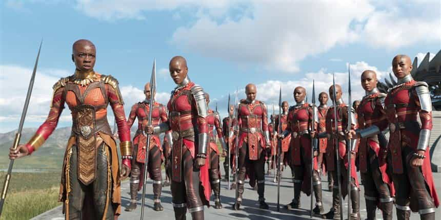

Michael is the author of Staying Married in a Degenerate Age. Follow him on Twitter or Facebook. You can read more of his writing at Honor and Daring.


Movies are overrated when it comes to their cultural effects. Hollywood hypes its movies as life changing to sell more movie tickets, but it is usually just marketing. But every now and then, a movie comes along that does capture the imagination and can lead to real world changes. Marvel’s Black Panther is such a movie.
Briefly, Black Panther is the story of a mythical African country known as Wakanda. To outsiders, Wakanda appears to be just like any other Third World African nation. In reality, Wakanda is the most peaceful, richest, and most technologically advanced nation on the planet. This is due to their possession of an alien substance called vibranium.
Wakanda is an all-black nation that is isolationist, anti-immigrant, and anti-refugee. In other words, Wakanda is a black ethnostate. However, it is not that Wakanda is racist per se. It only restricts itself because that is in the best interest of its citizens. I believe that Wakanda is the most powerful concept in the movie.
Wakanda is led by the powerful and wise king T’Challa. T’Challa’s kingship is challenged by the villain Erik “Killmonger” Stevens, who also happens to be black. Killmonger wants to give vibranium to blacks worldwide so that the will be able to overthrow their white oppressors. Thus, the movie avoids falling into a simplistic dichotomy of “black man good, white man bad.”
“Would you kill me, my love?”
“For Wakanda? No question,” pic.twitter.com/nnPQV2IOQZ
— Reg (@TheStarIsR) February 22, 2018
While there is a lot of adventure in the movie, the piece of the story that has really captured the imagination of black movie goers is Wakanda itself. Here is an African nation that is completely independent of Western aid with competent and honest leadership. This contrasts with the African nations of today which are too often characterized by poverty and corrupt leaders. MSNBC personality Joy Ann Reid wrote:
Contrast Wakanda with the Africa of today, a continent too often depicted in movies and the scant Western news coverage it receives as nothing more than a collection of backward and impoverished nations ruled by corrupt regimes and ripped apart by colonialism and dictatorship; what the current American president called “shithole” countries. Few realize the gleaming cities and rich, vibrant history this vast region holds. (My godmother’s old history books, stacked in her little library in the Bronx, literally take Egypt physically out of Africa.)
While Reid is diametrically opposed to Donald Trump, the irony is that Wakanda is sort of much more extreme version of what Trump wants for the United States. Trump wants to minimize the number of refugees and immigrants that the US accepts. Wakanda does not permit any refugees or immigrants at all. Like Trump, Wakanda does not do this out of any hatred or racism, but out of the simple recognition that a ruler must put the good if his citizens first. Only a strong, healthy country can benefit other nations.

Even though Black Panther avoids painting all black people as good and all whites as bad, it is not free from racial animus. Whites are called “colonizers,” referring to historical colonization of Africa by the European powers starting in the 19th century and coming to an end in the 20th. The implication being that the various African people would have formed Wakandas had it not been for the white man.
This divisive message has been picked up on by black movie goers as can be seen by the tweets below. This message of racial pride and separateness will only buttress the movement in the black community to stop looking to white civilization, and instead form parallel black institutions.
Let’s keep it going !!!!! pic.twitter.com/vz1AVDdHjg
— #TeamWakeNHate (@BabyFaceChem) February 23, 2018
— PMLEGEND™ (@PMLEGEND) February 23, 2018
In 2018 let’s stop celebrating first blacks and act like we have been there before pic.twitter.com/ivgCEVN0ui
— T. Millionaire JD (@toddmillionaire) February 27, 2018
Celebrating second place (aka first black) is embarrassing. Stop that
— T. Millionaire JD (@toddmillionaire) February 27, 2018
On a side note, I find it interesting that the media feeds whites messages of racial harmony and the need for unity above all things—never anything like pride in the achievements of European civilization. The recent Superbowl and Olympic commercials are good examples of this.
On the other hand, blacks are taught to have racial pride and to take pride in the achievements of their ancestors, even if some of those accomplishments originate in a comic book that was started by two Jewish guys.
This double standard is not the fault of the black community. Rather, it is the result of social engineering by wealthy elites upon both groups. Their goal is to create a US that has no ethnic majority. Black Panther is meant to reinforce that message, but over the long term it may inadvertently lead to the formation of parallel institutions or even the restructuring of the US as we know it.
Black Panther is a fun movie and it can be enjoyed just at that level. It carries a wholesome message that communities need to take care of themselves before they can begin to help those on the outside. Further, successful communities need strong, selfless leaders and a virtuous people. These characteristics are prerequisites for all successful countries.
But the movie also carries with it the more controversial message that blacks might be better off on their own without the meddling of the “colonizers.” Only time will tell if Black Panther will give more momentum to a feeling that is already in catching on in the black community.
Read More: Is The Black Nationalist “Hotep” Movement An Ally In The War Against Globalist Elites?